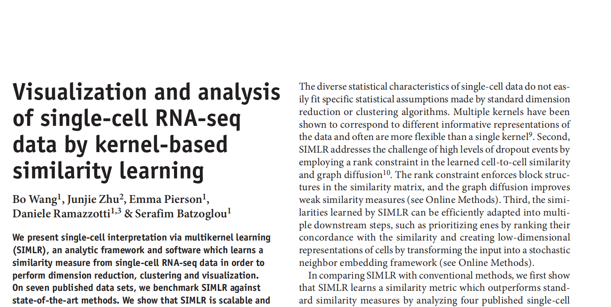
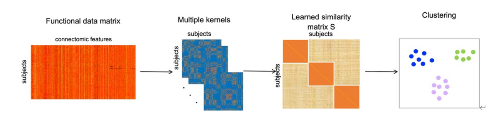

本文介绍了一种机器学习的神经疾病诊断方法network atlas-guided feature selection（基于脑网络连接图谱的特征选择）。
本文是对NAGFS中提及的SIMLR算法的解读。

注：本文涉及到了很多数学知识，包括凸优化，矩阵论等内容。
概述
在我们本次实验中，我们采用了NAGFS方法进行疾病的诊断。NAGFS方法其中主要涉及到了两种算法：SIMLR和SNF算法。在本次实验中，我们花了很大的精力去研究SIMLR方法中的数学公式，学习到了很多机器学习相关的知识。本文是对我们学习的成果的简要总结。
SIMLR算法的诞生，是为了解决从输入的单细胞RNA序列数据中学习细胞与细胞之间相似度矩阵的问题。而单细胞的RNA序列数据和我们在本次实验（NAGFS）中的数据都是高维稀疏特征数据，在数据特点上有相似性。该算法对大规模数据有良好的性能，同时又提高了聚类的效果。
相较于传统的算法，SIMLR算法主要有以下优势：
它通过多个核函数的方法来学习一个最符合输入数据集的相似性矩阵。常规的聚类算法有时并不适用于特征维度过高的数据。同时，研究表明，使用多个核函数可以更好地描述数据的信息，并且相比于单个核函数，多个核函数具有更好的灵活性。
SIMLR算法应用秩约束来增强相似度矩阵的分块对角结构，这样做可以提高对数据特征的捕捉能力。
SIMLR算法还使用图扩散的方法，以提高对弱相似度的识别能力。
算法框架

输入一个$N$×$M$的的基因表达矩阵，$N$代表细胞个数，$M$代表基因数。SIMLR算法将输出一个$N$×$N$的相似性矩阵。其中$S_{ij}$表示两个细胞之间的相似度。给定一个细胞种类数$C$，算法假定输出的相似度矩阵将有一个含$C$个分块的分块对角矩阵，各个分块中的细胞更为相似。我们对两个细胞之间的距离定义为：
其中$S{ij}$,$w{l}$代表核函数的权重，每个$w{l}$代表每个核的重要性。$K{l}\left( c{i},c{j} \right)$是细胞i与细胞j作为参数的函数。
注：留心这里的K函数，它是用来衡量两个个体的相似性的。这个函数将在后面介绍。
算法依据如下损失函数来计算细胞与细胞之间的相似性：
其中$I{N}$和$I{C}$分别为$N$×$N$和$C$×$C$的单位矩阵，$\text{tr}(.)$代表矩阵的秩，$\beta$和$\gamma$均为非零值，$\parallel S \parallel_{F}^{2}$为F范数表示，$L$为辅助低秩矩阵，用来对$S$进行低秩约束。因此这个损失函数求解三个参数：相似度矩阵$S$，核函数权重向量$w$，以及一个结构为$N$×$C$的秩约束矩阵$L$。
损失函数的第一项含义为，如果两个细胞间的距离很远，则它们的相似度应该很低。第二项是一个对$S$的正则化，防止$S$矩阵过于接近一个单位矩阵。如果细胞可以被划分为$C$类，则每一类中的细胞更为相似，理想情况下矩阵$S$的秩为$C$。因此，损失函数的第三项以及$L$矩阵的引入增强了$S$的低秩结构，而矩阵$(I_{N} - S)$为拉普拉斯矩阵，在一个相似图中，每个节点代表一个细胞，边衡量节点间的相似性。第四项对核函数的权重进行约束，防止单核函数情况的出现。实践证明，这个正则化项提高了相似矩阵的表现。
在公式(2)中，第二项 $\beta|S|_F^2$是Frobenius范数的正则化项，它用于避免过拟合。
为什么正则项可以防止 $S$ 过于接近一个单位矩阵?
正则项$\beta|S|_F^2$的作用是惩罚$S$中的大值。由于单位矩阵的对角线元素为1，如果没有正则化，优化过程可能会倾向于增加$S$的对角线元素。加入正则项后，对角线元素的增加会带来正则项的显著增长(因为是取平方)，从而造成总的优化目标函数值的增加。因此，正则项可以防止$S$中的对角线元素过大，进而避免$S$过于接近单位矩阵。
公式中的第四项 $\rho$ $\sum_lw_l$$logw_l$是一个熵正则化项。在上下文中，$l$代表不同核函数的权重，这项正则化的目的是为了保证所选核函数的多样性。在没有这项正则化的情况下，优化可能会倾向于选择单个核函数，从而忽略其他核的信息。
SIMLR算法核函数构造
由于高斯核相较于其他类型的核能够带来更好的性能，因此采用带有不同超参数的高斯核为基础构建不同的核函数。
其中$\parallel c{i} - c{j} \parallel$表示细胞$i$与细胞$j$之间的欧几里得距离，方差$\epsilon_{ij}$的定义式如下：
其中$KNN(c_{i})$表示细胞$i$的前$k$个邻近的细胞。因此，每个核一对由参数$(\sigma,k)$决定，设定$k$=10，12，14,…,30 以及$\sigma$ =1.0，1.25，1.5，1.75，2，产生了55个不同的核函数。然而，实践证明，算法对核函数的数量以及参数的选择并不敏感。
注：笔者认为这或许给改进算法提供了一种思路。
这里要注意的是：$K$函数中的指数部分的分母是什么含义？也就是公式(4)(5)的含义是什么？
为了方便理解，笔者把$\varepsilon{ij}$暂称之为自适应系数。对于公式(4)，其表达的含义是：这个细胞和其他细胞的平均距离，也就是这个细胞所处高维空间的稀疏程度。平均距离越大，意味着所处的空间越稀疏。$\mu_i$可以控制$\varepsilon{ij}$，从而控制高斯核函数的分布。而高斯核函数的分布，会影响两个细胞相似度的计算。总结来说，这实质上是一种自适应调节机制。有助于在不同密度的数据区域中，更好地捕捉和反映出细胞之间的真实相似度。
由于公式(3)的指数部分的分子是欧氏距离的平方，这个时候分母添加上自适应系数$\varepsilon_{ij}$，排除两个样本各自所处的空间的稀疏度的影响，就是容易理解的了。
核函数权重初始化
核函数的权重$w$被初始化为核函数数量的倒数：
相似度矩阵$S$被初始化为：
而矩阵$L$被初始化为拉普拉斯矩阵$(I_{N} - S)$的前$C$个特征向量。
优化算法
我们对$S$,$L$和$w$进行优化。上文中的优化式非凸，但是当两个变量固定时得到的目标函数为凸函数。因此我们可以有效的应用凸优化算法来进行求解。
步骤一：固定L和w对S进行更新。
优化问题可以被重写为：
目标函数中第一项求和式以及约束项均为线性，而第二项是一个二次项，它可以在多项式复杂度的时间内计算出来。
步骤二：固定S和w对L进行更新。
优化问题可以被重写为：
当$L$是与$\left( S - I{N} \right)$的$C$个最大特征值相关联的特征空间的正交基时，$L^{T}\left( S - I{N} \right)L$的迹最大，因此可以使用任何矩阵数值工具箱有效的计算$L$。此时对$L$矩阵的求解就是拉普拉斯矩阵$\left( S - I_{N} \right)$对应的$C$个最大特征值的特征向量。
步骤三：固定S和L对w进行更新。
同样地，优化问题可以被重写为如下形式：
对于这样一个包含凸函数和线性约束的问题，任何一个标准凸优化算法都可以进行求解。
步骤四：通过扩散增强相似性。
我们应用了一种扩散方法来减少噪声和dropout现象对$S$矩阵的影响。给定矩阵$S$，我们构建如下形式的过渡矩阵$P$：
其中$1{j}$表示指标函数，$A{K}(i)$代表一个集合，里面包含了细胞$i$的$K$个近邻细胞的索引。在这种构造下，构建出来的过渡矩阵是稀疏的，并且保留了极大部分的相似度结构。算法的更新方法如下所示：
其中$H{ij}^{(0)} = S{ij}$作为输入，而最终迭代出来的结果$H{ij}$作为新的相似性度量$S{ij}$。这个额外的扩散方法将会很大程度上避免噪声值所带来的影响。然而，这个算法的计算复杂度较高，因此在面对大规模数据集时它无法发挥有效作用。
SIMLR算法重复步骤1-4直到算法收敛。在算法的实现过程中，SIMLR在大约十次的迭代内收敛，其中还包括了调优算法超参数的方法。
后续步骤
用SIMLR进行降维
SIMLR基于SNE算法进行降维，并进行了一个重要的调整。不同点在于，t-SNE算法基于高斯核来计算高维度空间下数据之间的相似度，随后将其映射到低维空间并保留这个相似度信息。我们没有选择直接输入基因表达矩阵而是输入了相似度矩阵$S$。
利用习得相似性进行基因优先排序
通过计算某个基因在不同细胞中表达的值与习得的相似度的相关程度来对基因进行排序。给定相似度矩阵$S$和某个基因在所有细胞中的表达结果$f$，表达式如下：
这是一个著名的用来衡量基因之间的一致性和相似性的无监督特征排序算法。拉普拉斯分数越高，则基因对细胞亚群的整体分化就越重要。然而，拉普拉斯分数对相似度矩阵中的噪声值非常敏感。为了克服这个问题，采用了下面这种方法。随机选取一定比例的细胞（如细胞总数的80%），随后根据相似性子集上的拉普拉斯分数来对基因进行排序。
SIMLR在大数据集应用
这一部分介绍了如何优化以上的算法步骤而提高算法处理大规模数据的能力。我们小组在这一部分没有认真细看，以下是对论文这一部分的翻译。其关键思想是使用KNN相似度来近似完全成对相似度。第一步是使用最近邻搜索技术ANNOY来优化KNN图的索引。ANNOY算法认为，一个近邻点的近邻也可能是一个近邻点。在构建出KNN图后，算法只更新每个细胞所预先选定的前$k$个近邻点。因为得到的相似度矩阵是稀疏的，所以使用Spectra来对$L$进行求解。
在得到相似度矩阵后，就可以进行细胞可视化和细胞聚类了。聚类时，从t-SNE框架中获得嵌入的过程的计算量很大，因此采用了一种谱聚类算法，它基本上等同于SIMLR算法中对矩阵$L$应用$k$均值。这种简单的算法对稀疏相似性的聚类非常有效，并可扩展到数以万计的细胞中。